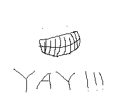
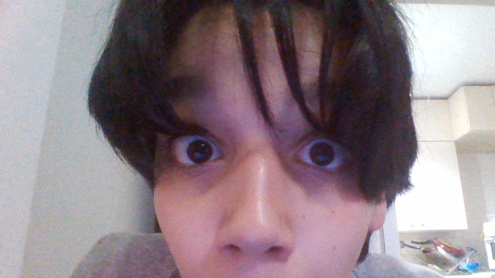

Denizin Sitesine Hoşgeldin!
WE ARE SO BACK!
Bakım Süresi
bakım yokki lol

Bakım süresi (yokken) yapabilecek şeyler:
Birazcık Unlost izleyebilirim!
Chrome Music Lab'de müzik yapabilirim!
CAT BOUNCE!!! :D

umm..bak burada çok koyabileceğim birşey yok ama arşivimde olan nadir şeyleri paylaştım umarım seversin!
Flash Player 32 (Standalone)
Counter Strike 1.6 Oyun Dosyaları (DeCompressed)
CS 1.6 Kurulum Dosyası
Geforce Experience (Global Versiyon)
Chrome Web Store Uygulaması